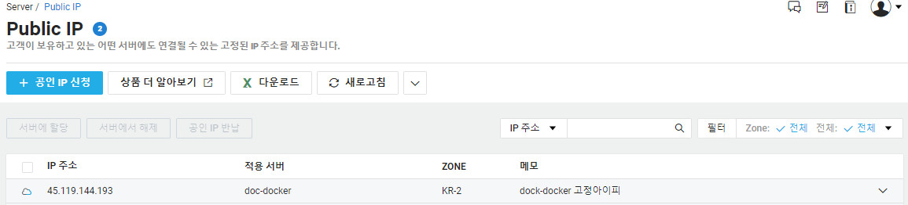

고정아이피할당
서버를 생성하면 서비스 제공을 위한 공인IP는 제공되지 않으며 공인IP를 할당받고자 할 경우 비용을 지불하고 할당을 받아야 한다.
서버 목록에서 상세목록을 보면 공인IP부분이 빈값인걸 볼 수 있다.
공인IP를 서버에 할당하려면 콘솔 화면의 왼쪽 Server > Public IP메뉴를 선택하고 공인IP 신청 버튼을 클릭한다.
신청 팝업이 나타나는데 Zone과 적용 서버를 선택한 뒤 확인버튼을 클릭하면 완료된다.
신청이 정상적으로 처리되면 아래와 같이 안내 화면이 나타난다.
Public IP의 목록에 새로 생성된 고정IP를 확인할 수 있다.

서버 목록에서 상세목록을 보면 공인IP부분에 IP가 할당된 것을 볼 수 있다.